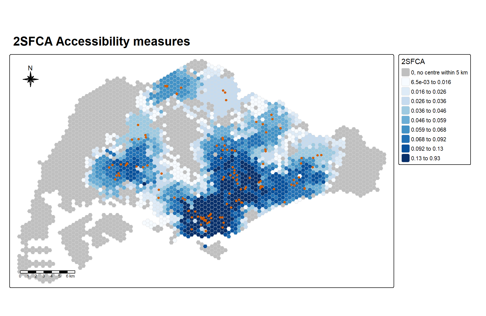
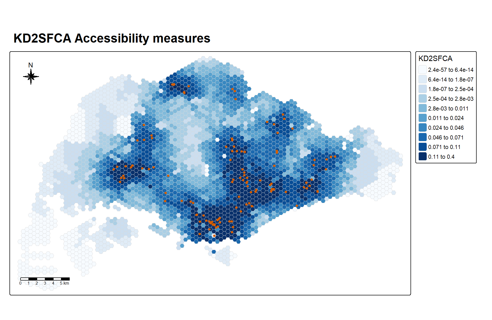
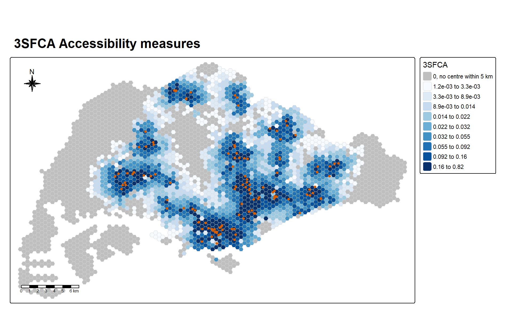

remotes::install_github('uva-bi-sdad/catchment')In-class Exercise 7
Modelling Geographic Accessibility
1 Overview
This in-class exercise follows Lesson 7. It models how easily the 3,125 hexagons covering Singapore can reach eldercare centres, using the catchment package to compute four floating catchment area measures. The accessibility package is loaded as in the lesson notes, and the tidied OD matrix below is kept in the long format it expects.
2 Getting Started
2.1 Installing the catchment package from GitHub
catchment is not on CRAN, so it is installed from GitHub. This only needs to run once, so the chunk is not run when the page renders.
2.2 Loading the packages
here builds file paths from the project root, so the same path works in the Console and during quarto render.
pacman::p_load(sf, tidyverse, tmap, accessibility, catchment, here)3 Importing the Data
This exercise reuses the four datasets from Hands-on Exercise 07, so I read them from that folder instead of keeping a second copy.
3.1 Importing geospatial data
The three geospatial layers are MP14_SUBZONE_NO_SEA_PL, hexagons and ELDERCARE.
mpsz <- st_read(dsn = here("Hands-on_Ex", "Hands-on_Ex07", "data", "geospatial"),
layer = "MP14_SUBZONE_NO_SEA_PL") %>%
st_transform(crs = 3414)hexagons <- st_read(dsn = here("Hands-on_Ex", "Hands-on_Ex07", "data", "geospatial"),
layer = "hexagons") %>%
st_transform(crs = 3414)eldercare <- st_read(dsn = here("Hands-on_Ex", "Hands-on_Ex07", "data", "geospatial"),
layer = "ELDERCARE") %>%
st_transform(crs = 3414)3.2 Importing the OD matrix
ODMatrix <- read_csv(here("Hands-on_Ex", "Hands-on_Ex07", "data", "aspatial", "OD_Matrix.csv"),
skip = 0)4 Data Wrangling
4.1 Supply
Each eldercare centre gets a capacity of 100, and fid is renamed to id.
eldercare <- eldercare %>%
select(fid) %>%
mutate(capacity = 100) %>%
rename(id = fid)4.2 Demand
The code chunk below creates a new field called demand and populates it with the value 100.
hexagons <- hexagons %>%
select(fid) %>%
mutate(demand = 100) %>%
rename(id = fid)4.3 Tidying the OD matrix
The code chunk below selects origin_id, destination_id and total_cost from the OD matrix, then renames them to from_id, to_id and dist.
ODMatrix_tidied <- ODMatrix %>%
select(origin_id, destination_id, total_cost) %>%
rename(from_id = origin_id,
to_id = destination_id,
dist = total_cost)4.4 Converting the ODMatrix data frame into a matrix
In the code chunk below, as.matrix() is used to convert the ODMatrix data frame into a matrix object.
distmat <- ODMatrix %>%
select(origin_id, destination_id, total_cost) %>%
spread(destination_id, total_cost)%>%
select(c(-c('origin_id')))
distmat_km <- as.matrix(distmat/1000)5 Computing 2SFCA with the catchment Package
In the code chunk below, catchment_ratio() is used to compute 2SFCA.
df_2sfca <- catchment_ratio(
consumers = hexagons$demand,
providers = eldercare$capacity,
cost = distmat_km,
max_cost = 5) %>%
as.data.frame() %>%
rename("2SFCA" = ".")5.1 Mapping 2SFCA
The slide shows only the map, and the prof said the code comes from the hands-on exercise. bind_cols() attaches the 2SFCA values to the hexagons, and st_bbox() sets the map frame. I reuse the acc_map() function from my Hands-on Exercise 7.
hexagon_2SFCA <- bind_cols(hexagons, df_2sfca)
mapex <- st_bbox(hexagons)
fmt_num <- function(v) {
sapply(v, function(z) {
if (z == 0) "0"
else if (abs(z) < 0.01 || abs(z) >= 1000) formatC(z, format = "e", digits = 1)
else if (abs(z) >= 100) format(round(z))
else formatC(signif(z, 2), format = "fg", digits = 2)
}) %>% trimws()
}
acc_map <- function(data, var, title, legend_title, zero_label = NULL) {
x <- data[[var]]
if (is.null(zero_label)) {
q <- quantile(x, probs = seq(0, 1, length.out = 11))
breaks <- c(q[1:10], Inf)
labels <- paste(fmt_num(q[1:10]), "to", fmt_num(q[2:11]))
fills <- "brewer.blues"
} else {
q <- quantile(x[x > 0], probs = seq(0, 1, length.out = 10))
breaks <- c(0, q[1:9], Inf)
labels <- c(zero_label, paste(fmt_num(q[1:9]), "to", fmt_num(q[2:10])))
fills <- c("grey75", RColorBrewer::brewer.pal(9, "Blues"))
}
tm_shape(data, bbox = mapex) +
tm_polygons(fill = var,
fill.scale = tm_scale_intervals(breaks = unname(breaks),
labels = labels,
values = fills),
fill.legend = tm_legend(title = legend_title,
position = tm_pos_out("right", "center")),
col = "grey85", lwd = 0.2) +
tm_shape(eldercare) +
tm_dots(size = 0.3, fill = "#D55E00", col = "black") +
tm_title(title, size = 1.5, fontface = "bold") +
tm_compass(type = "8star", size = 2,
position = c("left", "top")) +
tm_scalebar(position = c("left", "bottom"))
}
acc_map(hexagon_2SFCA, "2SFCA",
"2SFCA Accessibility measures",
"2SFCA",
zero_label = "0, no centre within 5 km")
NoteLearning diary
1,281 of the 3,125 hexagons have a 2SFCA of 0, because no eldercare centre is within 5 km of them by road. With plain quantile classes, the lowest classes all run from 0 to 0, which is why the legend on the prof’s map repeats “0.000 - -0.001”. So I give the zeros their own grey class and split the rest into nine classes, pale for low and dark for high, following the colour guides from ISSS608 Lesson 2.
6 Computing E2SFCA with the catchment Package
6.1 Enhanced 2-Step Floating Catchment Area (E2SFCA)
E2SFCA gives nearer centres more weight. step_weights sets the weight for each distance band, from 0.01 for centres between 4 and 5 km away to 1 for centres within 1 km.
step_weights <- list(c(5, .01), c(4, .05), c(3, .1), c(2, .4), c(1, 1))
df_e2sfca <- catchment_ratio(
consumers = hexagons$demand,
providers = eldercare$capacity,
cost = distmat_km,
weight = step_weights) %>%
as.data.frame() %>%
rename("E2SFCA" = ".")6.2 Mapping E2SFCA
hexagon_E2SFCA <- bind_cols(hexagons, df_e2sfca)acc_map(hexagon_E2SFCA, "E2SFCA",
"E2SFCA Accessibility measures",
"E2SFCA",
zero_label = "0, no centre within 5 km")
NoteLearning diary
2SFCA counts every centre within 5 km fully, while E2SFCA cuts a centre 4 to 5 km away down to 1 percent of its weight. The two measures rank the hexagons with a Spearman correlation of 0.958, and E2SFCA has 1,281 hexagons at 0. The steps act like a stepped version of the distance decay used in KD2SFCA in Hands-on Exercise 7.
7 Computing KD2SFCA with the catchment Package
7.1 Kernel Density (Gaussian) 2-Step Floating Catchment Area
df_kd2sfca <- catchment_ratio(
consumers = hexagons$demand,
providers = eldercare$capacity,
cost = distmat_km,
weight = "gaussian") %>%
as.data.frame() %>%
rename("KD2SFCA" = ".")7.2 Mapping KD2SFCA
hexagon_KD2SFCA <- bind_cols(hexagons, df_kd2sfca)
acc_map(hexagon_KD2SFCA, "KD2SFCA",
"KD2SFCA Accessibility measures",
"KD2SFCA")
NoteLearning diary
weight = "gaussian" uses the weight exp(−d² / 8), because catchment_weight() sets the scale to 2 km unless told otherwise. There is no max_cost here, so no centre is ever cut off, and 0 hexagons are exactly 0. That is why this map needs no grey class. A centre 2 km away still counts for about 61 percent, while one 6 km away counts for about 1 percent, so the far west only gets a tiny value.
8 Computing 3SFCA with the catchment Package
8.1 3-Step Floating Catchment Area
df_3sfca <- catchment_ratio(
consumers = hexagons$demand,
providers = eldercare$capacity,
cost = distmat_km,
step_weights,
normalize_weight = TRUE) %>%
as.data.frame() %>%
rename("3SFCA" = ".")8.2 Mapping 3SFCA
hexagon_3SFCA <- bind_cols(hexagons, df_3sfca)
acc_map(hexagon_3SFCA, "3SFCA",
"3SFCA Accessibility measures",
"3SFCA",
zero_label = "0, no centre within 5 km")